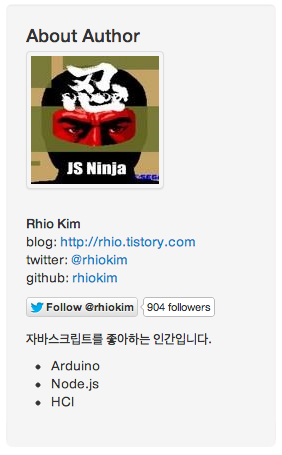

About Author

Rhio Kim
blog: http://rhio.tistory.com
twitter: @rhiokim
github: rhiokim
자바스크립트를 좋아하는 인간입니다.
- Arduino
- Node.js
- HCI
About this Article
Date Released:
Saturday, September 22 2012 5:13 PM하루프레스 저작자 프로파일 수정하기
하루프레스는 현재 버젼 v0.8.x 에서 GUI 관리 도구를 제공하지 않기 때문에 환경 설정을 번거럽지만 해당 파일들을 직접 열어 설정해야 한다.
- 환경설정 파일 : config.js
- 사용자 프로파일 : source/data/authors/*.markdown
이번에는 사용자 프로파일 설정을 바꾸는 방법에 대해서 간단히 설명한다.
사용자 프로필 변경
먼저 하루프레스 설치 디렉토리에 source/data/authors 디렉토리를 열어보면 기본 유저 정보인 haroopress.markdown 파일과 설치 시 입력한 저작자(author) 이름으로 된 마크다운 파일이 존재할 것이다.
- haroopress.markdown
- your author.markdown
먼저 설치 시 입력한 저작자 이름으로 된 마크다운 파일을 열어보자.
{
…<메타정보>…
}
…<소개>…
간단히 위와 같은 저작자에 대한 메타 정보와 자기 소개로 구성된 마크다운 문서이다.
메타정보는 JSON 포맷으로 각 key 값에 맞는 정보를 입력하면 된다. 뿐만 아니라 JSON 포맷을 유지한 체로 다양항 정보를 더 입력해도 무방하다.
소개 영역은 마크다운 구문으로 자기 소개를 작성하면 된다. 간단한 예시를 보자.
{
"name": "Rhio Kim",
"company": "",
"blog": "http://rhio.tistory.com",
"twitter": "rhiokim",
"github": "rhiokim",
"vimeo": "",
"youtube": "",
"facebook": "",
"linkedin": "",
"email": "rhio.kim@gmail.com"
}
<빈줄>
자바스크립트를 좋아하는 인간입니다.
* Arduino
* Node.js
* HCI
이렇게 작성하고 make gen 을 하면 다음과 같이 블로그에 표시된다.

Gravatar(그라바타)
중요한 점 한가지는 위의 메타 정보에서 email 은 Gravatar.com 이미지를 그대로 표시하기 때문에 email 로 등록된 gravatar 이미지가 존재해야 한다.
저작자를 추가하려면
하루프레스는 팀블로깅도 쉽게 할 수 있다. 조금 전 source/data/authors 에 저작자 이름으로 된 markdown 파일을 추가하기만 하면된다.
그리고 글을 작성할 때 글 메타정보의 author 값에 해당 저작자 이름을 입력하기만 하면된다.